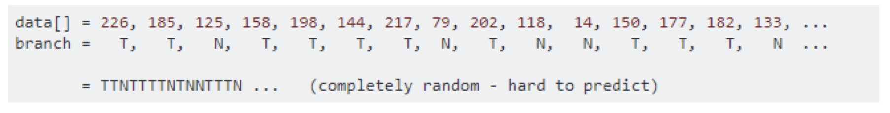
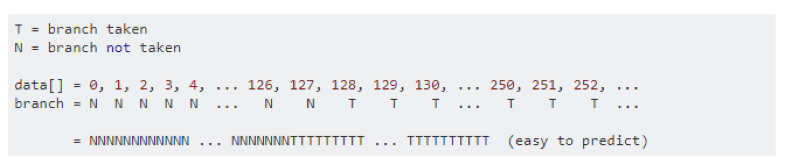
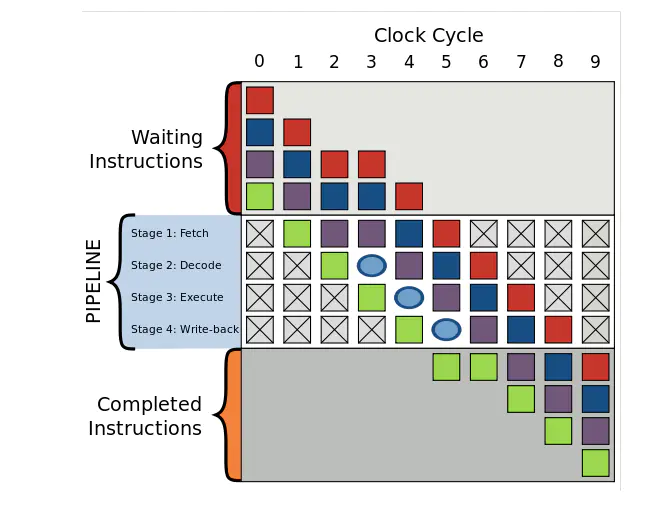
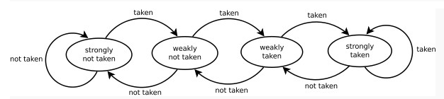
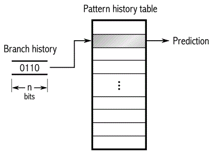

分支预测(Branch Prediction)
问题：一个排序带来的差异
x
public static void main(String[] args) { int size = 32768; int data[] = new int[size]; Random random = new Random(0); for (int i = 0; i < size; i++) { data[i] = random.nextInt() % 256; } // 是否排序 Arrays.sort(data); long start = System.nanoTime(); long sum = 0; for (int i = 0; i < 100000; i++) { for (int j = 0; j < size; j++) { if (data[j] >= 128) { sum += data[j]; } } } System.out.println((System.nanoTime() - start) / 1000000000.0); System.out.println("sum = " + sum);}- 未排序耗时：
11.333646239 - 排序后耗时：
3.729554356
- why ？
Branch Predictor

Ask or Guess direction ？
- 如果猜对了 - 继续行驶
- 如果猜错了 - 停车、倒回去、调整轨道，重新启动、继续行驶
- 如果每次都猜对 - 永远不用停车、一直向前
- 如果每次都猜错 - 反复停车、倒车、重启
分支预测（Branch Prediction）是现代处理器用来提高CPU执行速度的一种手段, 其对程序的分支流程进行预测, 然后预先读取其中一个分支的指令并解码来减少等待译码器的时间.
维基百科 a strategy in computer architecture design for mitigating the costs usually associated with conditional branches, particularly branches to short sections of code."
How to predict it ?
导致非排序数组耗时显著增加的 if-statement
xxxxxxxxxxif (data[j] >= 128) { sum += data[j];}- T = 分支命中
- N = 分支没有命中
unsorted data

sorted data

Why need ?
CPU Instruction Pipeline
Pipieline假设程序运行时有一连串指令要被运行，将程序运行划分成几个阶段，按照一定的顺序处理
四个执行阶段(execuate stage):- 读取指令(
Fetch) - 指令解码(
Decode) - 运行指令(
Execute) - 写回运行结果(
Write-back)
- 读取指令(
分支预测器
分支预测器是一种数字电路，在分支指令执行前，猜测哪一个分支会被执行，条件分支通常有两路后续执行分支，not token时,跳过接下来的JMP指令，继续执行， token时，执行JMP指令，跳转到另一块程序内存去执行
假设没有分支预测
如果没有分支预测器，处理器会等待分支指令通过了pipeline的执行阶段(execuate stage)才能把下一条指令送入pipeline的fetch stage，这会造成
流水线停顿/冒泡
加入分支预测器后，为避免流水线停顿，其会猜测两路分支哪一路最有可能执行，然后投机执行，如果猜错，则流水线中投机执行中间结果全部抛弃，重新获取正确分支路线上的指令执行。所以，错误的预测也会导致程序执行的延迟。
复杂的流水线，好的分支预测器非常重要
Two Strategy
静态预测
编译时进行
任选一条分支：
- 认为Branch一定会 token
- 认为Branch一定不会token
平均命中率： 50%
动态预测
运行时进行
根据同一条转移指令过去的转移情况来预测未来的转移情况
- 分支预测缓冲区 -
Branch Prediction Buff - 分支历史表 -
Branch history table
- 分支预测缓冲区 -
Some predict model
饱和计数

- 强不选择 - Strongly not taken
- 弱不选择 - Weakly not taken
- 弱选择 - Weakly taken
- 强选择 - Strongly taken
当一个分支命令被求值，对应的状态机被修改。分支不采纳，则向“强不选择”方向降低状态值；如果分支被采纳，则向“强选择”方向提高状态值。这种方法的优点是，该条件分支指令必须连续选择某条分支两次，才能从强状态翻转，从而改变了预测的分支
两级自适应预测器

对于一条分支指令，如果每2次执行发生一次条件跳转，或者其它的规则发生模式，那么用上文提到的饱和计 数器就很难预测了。如图所示，一种二级自适应预测器可以记住过去n次执行该指令时的分支情况的历史，可 能的2^n种历史模式的每一种都有1个专用的饱和计数器，用来表示如果刚刚过去的n次执行历史是此种情况 那么根据这个饱和计数器应该预测为跳转还是不跳转
How to optimize ？
避免在循环中嵌套条件分支. 如果可能,将分支移到外部, 使用多个子循环
xxxxxxxxxxdo {if (condition_1){//branch_1} else if (condition_2){//branch_2} else {//branch_3} //if} while (true);xxxxxxxxxx//改进版本if (condition_1) {do {//branch_1} while (true);} else if (condition_2) {do {//branch_2} while (true);} else {do {//branch_3} while (true);} //if合并分支条件. 此举在某种情况下可以大大降低产生错误分支预测的概率
xxxxxxxxxxif (condition_1 == 0 || condition_2 == 0 || condition_3 == 0) {//branch} //if//改进版本:if ((condition_1 | condition_2 | condition_3) == 0) {//branch} //if⁉️合并分支条件. 是否真的有必要呢？因为不优化的时候实际上是有条件短路的可能，避免不必要的计算；而优 化后可能还涉及到cache miss和冗余计算
移除明显的条件分支, 将执行概率大的条件分支移前
这一条不仅仅有助于规避错误分支带来的性能惩罚, 还减少了不必要的检测分支条件消耗的CPU时钟周期.
for( ; ; ) and while(true)
xxxxxxxxxx// 编译前while(true);// 编译后mov eax,1test eax,eax // branchje foo+23hjmp foo+18hxxxxxxxxxx// 编译前for(;;);// 编译后jmp foo+23h
以上-
谢谢